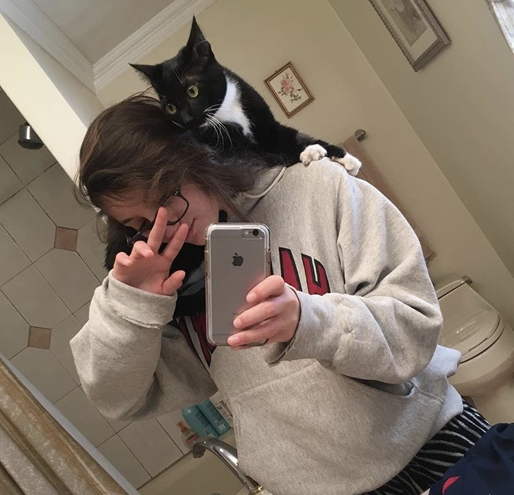
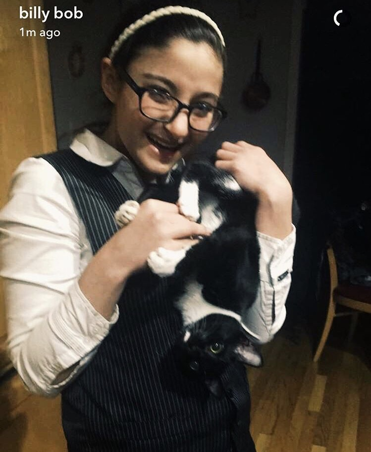

As kitty grew close to us throughout the first couple months, he was adventurous and liked to climb on us and explore us. Kitty didn't fully into loving us until about three months ago, but that was because of the fact that he couldn't actually explore until I left for college and put my loving guinea pig on adoption. After that our cat had the ability to roam throughout any room of the house and make it his own. With the extra freedom that he had just contained he felt as if he was finally apart us, wondering throughout the rooms and sleeping with whom ever is more comfortable and warm. Although somethings my kitty would rather be alone and sleep without anyone laying a finger on him, or he could be the most loving little cuddle buddy who comes underneath the covers and purrs on you while you sleep. Other times, you could be simply walking around the house looking for him and he will just pop out of nowhere and start attacking you.
 